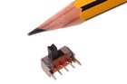

9 mm SPDT Switch (Slide) Side Adjust - SSW9S
Summary
Name: 9 mm SPDT Switch (Slide) Side Adjust
ID: SWIS-09-X-SPDT-68
Hex ID: SSW9S
WebPage: https://github.com/oomlout/oomlout-OOMP/wiki/SWIS-09-X-SPDT-68
Short URL: http://oom.lt/SSW9S
Revision History: https://github.com/oomlout/oomlout-OOMP/blob/master/parts/SWIS-09-X-SPDT-68/
| Type |
Size |
Color |
Description |
Index |
SWIS
Switch (Slide) |
09
9 mm |
X
|
SPDT
SPDT |
68
Side Adjust |
Images

About
This part is awaiting a description.
Specifications
| Info |
Value |
| Type |
Switch (Slide) |
| Size |
9 mm |
| Description |
SPDT |
| Index |
Side Adjust |
| Number of Pins |
3 |
Extra Details
Spotted a mistake, want to add more? Let us know oomp@oomlout.com
All images and resources are licensed [CC BY-SA] unless otherwise stated (ie. the datasheets)